Management Discussion & Analysis
- i-Sri Lanka, network modernisation project commenced in 2011
- Corporate rebranding and Megaline re-launched
- Significant capital investment of Rs.10,069 million in SLT Company
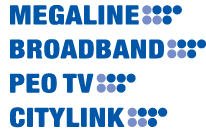
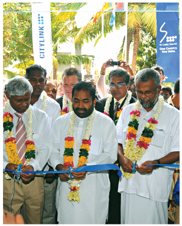
i-Sri Lanka Network Modernisation Project
The largest ICT project in Jaffna alongside the opening of the SLT Regional Telecommunication Office and Maintenance Centre in Jaffna.
Overview
As the national and premier telecommunication solutions provider, Sri Lanka Telecom has always been an integral component in creating an enabling environment for the country to achieve its macro vision. In 2011, Sri Lanka unveiled an ambitious yet achievable five year plan that would make the country South Asia's Economic Hub. Integrating a policy of inclusive growth that would encompass the entirety of the country, Sri Lanka began instituting a vision of balanced regional development while implementing a mega infrastructure development drive. This Vision for the Future envisaged that Sri Lanka would be transformed into an economic hub for the South Asian region.
Within the vision of this Economic Hub, the industries of Aviation, Maritime, Commercial, Knowledge and Energy would comprise the five pronged development drive that Sri Lanka's future would embrace. Hence, when the Future Calls and these development hubs need the necessary communication and IT services on which to base their development and operations, Sri Lanka Telecom is one step ahead. In 2010, we ensured that we had established our technological foundations to form the development infrastructure that would deliver our accelerated development programme. We were certainly Future Ready as Sri Lanka was confident of moving into a larger, more focused vision of truly becoming a force in
South Asia.
Our strength has always been in our fortitude and forward thinking abilities. Sri Lanka Telecom has pragmatically studied and analysed global trends, remaining one step ahead to seize growth opportunities, with strategies and plans to meet any challenges and opportunities as they arise. We are ready for every eventuality, every opportunity and every trend and we have successfully connected the nation to make it ready for the future, bringing together millions of people on the single platform of connectivity.
With Sri Lanka's literacy rate of 90% being one of the highest in the world, we have seen a concerted drive to increase IT literacy among the population, with the government driving initiatives that will improve ICT education as well as English proficiency, accelerating ICT literacy rates to 75% from its current 30%. Internet users increased to over 12% of the population in the last year, and Telephone density now stands at 105.3, compared to 100 in 2010. The telecommunication industry in Sri Lanka is expected to grow in both Broadband and mobile markets, although fixed telephony will maintain marginal growth, echoing global trends.
Sri Lanka Telecom's capital investment during 2011 is creating an enabling environment for Sri Lanka's future development drive. Building on groundwork laid in previous years, one of the highlights we have achieved is the SLT Backbone Network which now covers the entirety of all electorates in the country, aligning it with the TRCL NBN requirement. We are now a truly national backbone that not only infuses a natural fit with the Group's existing wholesale business but also creates the capability to drive business growth for both small and large communication service providers in the macro scale of development.
There is a concerted drive to grow this segment of the market aggressively over the coming years. This is spearheaded by our i-Sri Lanka Project, which aims to propel Sri Lanka towards increased broadband penetration and service quality on par with any developed country. Launched in Jaffna this year, and complementing our north and east development drive, i-Sri Lanka uses FTTN technology to deliver increased access to IPTV and high speed broadband for all fixed Megaline customers, who gain the advantage of up to 20Mbps speed within a two kilometer copper length from the exchange. By 2013, 90% of the fixed customers will be covered, while an additional 600,000 NGN broadband ports to be added to the network in 2012.
Economic Overview
Sri Lanka closed 2011 having met its GDP target of 8%, well ahead of world economic growth of 4%, and emerging and developing economies estimated growth of 6.4%. The services sector, into which the telecommunication industry is an important contributor, grew by 8.6%, contributing US $ 34 Bn (58%) to the GDP in 2011. This is attributed to enhanced investment and the gradual integration of the northern and eastern provinces into the rest of the economy.
From a global perspective, there is a marked transformation permeating the entire telecommunication industry, with voice shifting from fixed line to mobile, naturally heralding a decline of fixed voice usage revenue. Mobile and fixed broadband growth means that operators must begin re-balancing their revenue mix through Internet, broadband and data services. Broadband has 581 million subscribers around the world, with Asia driving this growth and China doubling its subscriber base. This strong growth out of Asia also saw IPTV approach 55 million subscribers, although some European markets held their own. Cloud computing, social networking, teleworking and increased e-government initiatives which drive high usage of data, trigger the need for speedier, more efficient broadband connectivity, while, from a technology perspective, FTTx has gained ground on traditional technology platforms with the largest growth percentage of 8% overall.
Operating Environment
In Sri Lanka, the telecommunication industry remains one of the fastest growing industries and ahead or on par with regional and global trends. Investment remains high, given that the industry is
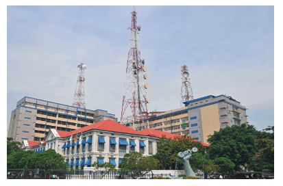
"Whether it's in customer trends, technologies of the future, industry challenges or global paradigms, the Transformation Programme has given us direction to ensure that we are aligned to deliver sustainable growth and a strong company into the future"
investment intensive, and technology continues to drive innovations and new services. We have seen traditional voice communication move to Internet enabled products and services via fixed and mobile, reflective of global trends. This presents a challenge to the industry and drives us to be ready to deliver customer needs and aspirations via superior products and service platforms.
The country currently hosts 64 telecommunication service providers providing domestic and international voice, data services, Internet services and wholesale services. However both fixed and wireless broadband penetration remain well below developing countries averages at 3.2%, with fixed lines accounting for a mere 1.3% and mobile broadband penetration at 1.9%. This is well below the global average and driving our accelerated broadband deployment to support the national agenda. Over the past year we have increased our fiber optics network by 4000 kms, with the nation-wide backbone totaling over 11,000 kms. Increased demand has been experienced for triple play services including Video on Demand and Time Shift TV over our PeoTV IPTV platform.
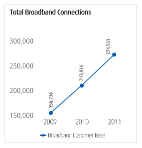
Global business will improve with IPLC revenue from overseas operators poised for growth, although global voice revenue continues its declining trend due to the migration from fixed to mobile and technology substitution and illegal terminations. From a sectoral perspective, a decline was also seen in fixed line CDMA voice as customers migrate to Megaline and mobile services to enjoy broadband capability. The transition from fixed to mobile over the past years saw a marked decline of fixed voice usage revenue. However this decline has now been arrested, against ongoing trends of instant messaging and social media. The Smart phone trend has positively impacted mobile growth, with voice now well complemented by additional applications on smarter and more capable devices.
In the 2011 Budget, the Government of Sri Lanka imposed a Telecommunications Levy of 20%, in lieu of the prevailing myriad levies collected from customers, which negatively impacted the setting off against input VAT. Customs duty has been exempted for additional items relating to telecommunication, ICT and BPO industries. The levies applicable for the International terminations which changed in July, 2010 prevailed in 2011, with per minute rates of Incoming Local Access Charge (ILAC) of USD 0.055, Telecommunication Development Charge (TDC) of USD 0.015 and Termination Charge of Rs. 0.50.. However, changes to these levies have been introduced from January, 2012.
Plans are underway by TRCSL to introduce a Broadband Policy, NGN Framework and to establish a National Backbone Network (NBN) in the near future. As per the Cabinet decision TRC started negotiations with SLT for implementation of the NBN by SLT, with the terms and conditions related to NBN under discussion between SLT and TRCSL.
The TRCSL extended the Sri Lanka Telecom License by another 06 months effective from August, 2011, while negotiations continue to finalise the terms and conditions pertaining to NBN and the new SLT license.
During the year 2011, Sri Lanka Telecom and Sri Lanka Telecom Mobitel contributed to the public consultation by TRCSL on 'NGN Policy and Regulatory Framework for Development of Next Generation Networks (NGN) in Sri Lanka'.
Being ready when the future calls
Our Transformation Programme launched in 2008 will continue for the next few years, as we transform the foundation upon which our company is built and align ourselves to being ready when the Future Calls. Whether it's in customer trends, technologies of the future, industry challenges or global paradigms, the Transformation Programme has given us direction to ensure that we are aligned to deliver sustainable growth and a strong company into the future. Focusing on the six areas of Product, Business Processes, Networks, Business Model, IT systems and Organisation, we have already embedded the delivered capabilities into our process and culture as we infuse best practices into cost management initiatives, product and service innovation, our processes and systems all focused on customer centricity.
The launch of Sri Lanka Telecom's corporate brand vision, 'One Country. One Voice', is based on leveraging our brand values, leadership in the industry and responsibility for driving the national vision. Sri Lanka Telecom has been a true pioneer in telecommunications in the country, not only from a value addition and technological perspective, but in delivering customer value propositions that are unique and ahead of time. The idea of 'One voice', positions the company as one that connects each of our stakeholders seamlessly under a common platform of connectivity. The new corporate identity further emphasized the need for unified branding, now extended to the five brands, Megaline, Broadband, PEO TV, Citylink and IDD, to rationalise brand image and values, brand promise and brand delivery, while also linked to our seven corporate values of Sri Lanka Telecom.
Calling the future for our customers
A catalyst within the Transformation Programme is the crucial focus on customer centricity that remains the axis around which all other facets revolve. For new and innovative solutions, to continually enhancing speed and choice, to being customer focused in everything we do, our team must create a culture sharply based on customer service excellence.
Offering the best of broadband and entertainment
SLT launched several new Broadband packages under its "Happy Broadband New Year 2011" campaign with major enhancements to the broadband Entrée Package coupled with price revisions to other Broadband Packages. These broadband packages are well positioned in the market and serving customer expectations and needs; supported also with the introduction of volume based, free of contention Packages.
During year 2011, SLT increased its international IP backbone capacity to 15.6 Gbps from 8.4 Gbps, driven by growth in the Broadband business, increased usage of SLT customers and providing IP Peering services to other ISPs. The SLT IP backbone includes redundancy from multiple cables that are connected to both west and east global directions to enhance reliability.
A major milestone this year included SLT direct peering with AMSIX, the Amsterdam internet exchange, one of the main internet exchanges in the world. This enhanced the quality of experience for customers, through IP connectivity to major content providers. In addition, direct peering capacity to Google was further increased to improve customer experience.
Customer's personalized entertainment experience further improved on our PEO TV platform. Control, Convenience, Choice; that's what PEO TV delivers as and when the Future Calls. Customers are given the option of controlling not only the content, but also when and
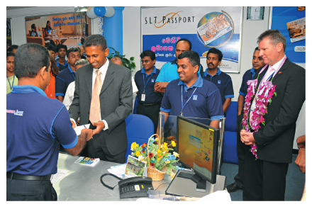
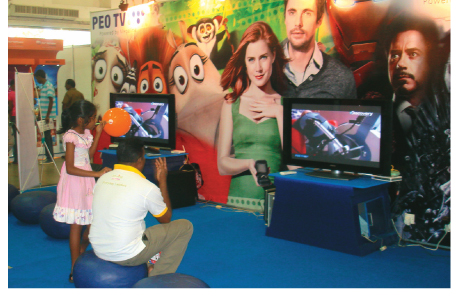
how television can be watched, as customers can rewind and watch programmes of choice at their convenience. There's also a wide choice in the information received, whether it's news and current affairs, movies and infotainment, in addition to a film and music library. Hence, we are ready, when the future calls, having already foreseen the need for control, convenience and choice, seized the opportunity and presented a solution leveraging our Megaline solution.
2011 can be deemed a remarkable year for PEO TV, as we doubled our customer base and delivered the best entertainment solutions for our customers. Through our PEO TV service we will truly revolutionise the entertainment and infotainment sphere in Sri Lanka.
Offering the best of entertainment and value additions
This year we increased our channel bouquet to 67 local and international channels, including multiple language channels, giving customers an extensive choice. More Tamil channels were added, as was an exclusive On Demand Video Library with content from local producers, while MTV channels were launched exclusively on the PEO TV platform, enabling us to meet long awaited customer expectations and keeping us ahead of our competitors. However, we are constantly monitoring the viewership patterns of each channel and will rationalise the choices and options, depending on the demand, to maximise the value addition given to our customers.
An improved TV schedule, services and parental control navigation system was introduced through in-house design and customisation with a PIN number to avoid unauthorized usage, access and purchases.
Network modernization kicked off country-wide
We have upgraded and expanded our network to cater to the needs of the people with special emphasis on the northern and eastern areas of the country. During this year SLT launched its ultra high speed Broadband Network under its nation-wide network modernization project "i-Sri Lanka". This is the largest ICT project in Jaffna alongside the opening of the SLT Regional Telecommunication Office and Maintenance Centre in Jaffna.
We added four new Teleshops in Moneragala, Jaffna, Kilinochchi and Embilipitiya into our increasing portfolio of customer centric initiatives all reflecting our new corporate identity. The Teleshops are proactive customer touch-points, increasing accessibility and enabling customers to avail themselves of information and a means of problem solving and inquiries. SLT now has 36 Teleshops and 34 Regional Offices to serve its customers, giving us a competitive edge and presence islandwide. In addition, bill payment facilities continue to improve with the total payment network now increased to more than 3500 outlets, with customers able to pay their bills conveniently at leading banks and supermarket chains.
Having identified the SME sector as a burgeoning contributor towards development, Sri Lanka Telecom launched a dedicated unit for SME customers in order to expand regional development and draw them into the economic journey of the country.
Building on achievement of ISO 9001:2008/SLS ISO 9001:2008 standards during 2010, the SLT Call Center was awarded in 2011 the operation of the Call Center for the Government Information Center. The GIC, established under the aegis of the Presidential Secretariat and the Information and Communication Technology Agency (ICTA) is the conduit which provides public sector information to the general public. The call center is activated by dialling 1919 through any network; callers will have access to information pertaining to any service offered by the public sector and can lodge complaints. The success of the Call Center can be evidenced in the fact that it deals with over 5,000 callers per day on 1919 and Sri Lanka Telecom has been commended by the Presidential Secretariat for the facilities and quality of service offered.
We are now fully entrenched as the national directory information provider for the nation, but our role has certainly expanded through our subsidiary company SLT Publications (Pvt) Limited. We are an integral partner to the country's agenda in ensuring accurate information is disseminated to the right people at the right time. We have also gone beyond the paper-based directory, to an integrated pool of information accessible via multiple points, offering added convenience and accessibility to the end user.
Considering the world's move towards more eco-friendly and tech-savvy means of obtaining information, SLT Rainbow Pages which is the classified directory moves beyond those boundaries and into the digital era as the future calls. Our strategy is to introduce diverse avenues that make directory information available via multiple devices, harnessing the synergies prevalent within the Group.
Building on this ethos of "information anywhere anytime", after launching the Rainbow Pages on a CD a few years ago, this was extended to the directory being available on the web, spawning an e-Directory, which due to its small file size, can be shared via e mail as a popular solution for computer users. In fact, Google Analytical Reports declare that the SLT Rainbow Pages has been accessed from 154 countries.
The Rainbow Pages is now truly a technology innovator, working through IPTV to enable interactive information availability. The RAIBOW PAGES directory information is also available for Sri Lanka Telecom, Mobitel, Dialog and Etisalat subscribers via a trilingual call center enabling Sri Lankans to access information at their convenience.
With quick and efficient accessibility to information being a priority in these modern times, we continue to look for more avenues where specialised information could be made available. This spurred us to launch the Tourist Directory, working in collaboration with Sri Lanka Tourism and the Export Development Board of Sri Lanka to compile industry specific directories.
Marketing for the future
Rejuvenated with a new corporate brand identity that combined an emotional platform with a unified stance for development, Sri Lanka Telecom's marketing initiatives were reflective of this brand identity of 'One Country. One Voice'. While all branding was changed to reflect the portrayal of values, togetherness and a singular vision, the company also analysed the future journey of its main products and aligned it with the future expectations of the customer.
SLT Megaline, Sri Lanka Telecom's flagship product emerged in mid 2011 with a new value proposition, launching three bundled packages promoting, 'One line offering three unique experiences.' The packages were Single Play (Telephone only), Double Play (Telephone and Broadband/PeoTV) and Triple Play (Telephone, Broadband and PeoTV), all available at an introductory connection charge. This offer also extended to existing Citylink customers with special offers in order to spur conversion from Citylink to Megaline. Transferring customers were further rewarded with the Citylink Loyalty Rewards Scheme, which offered a special wireline package.
2011 was launched as Happy Broadband New Year, presenting impressive enhancements to the existing Entree package and other broadband packages, as well as extending the broadband usage meter to all SLT customers. This served as an introduction to a 100% bandwidth increase, which doubled speed with additional included data usage for certain broadband packages, at no extra charge.
"To be ready when the Future Calls meant that Sri Lanka Telecom had to accelerate the NGN Transformation project, starting with the key strategy of a speedy migration of customers connected to legacy networks onto the NGN platform"
Sri Lanka Telecom promoted the tariff revision in the IDD segment applicable to both premium and budget categories, where postpaid premium tariffs were reduced for 14 countries. We also introduced a novel marketing campaign based on high volume IDD countries in a boost to promote IDD services and increase IDD revenues. Customers were given the benefit of calling 26 countries on their respective national days at very attractive IDD rates.
Seasonal promotions were also highly successful during April offering customers new connections at discounted rates for Megaline, Broadband, PEO TV and Citylink. SLT Broadband was also given a boost with WWW & Win, a month long promotional campaign which enticed customers to subscribe for broadband, with no start up fee. Coinciding with these April holidays, My Astro, a product co-branded with Sri Lanka Telecom Mobitel was launched, offering personalised readings of horoscopes.
The WWW Campaign launched in November 2011 was aimed at reiterating the quality, consistency, speed and uninterrupted service
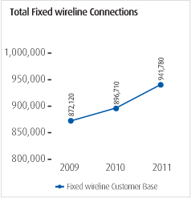
levels of SLT Broadband, while one month later, we also introduced 4-port wireless routers at an introductory price for broadband customers promoting wireless internet access over Home/Office WiFi by bringing increased flexibility to our flagship product.
Wholesale and Corporate in future mode
This business segment saw significant growth during the year across the three segments of public sector, large and medium scale private sector entities.
Sri Lanka Telecom has a proactive role to play in delivering innovative and sound business solutions to our customers that span from Government ministries and departments, to hospitals, the security forces, to blue chip conglomerates, banks, hospitality ventures and infrastructure entities; Sri Lanka Telecom forms an important part of the economic journey ahead.
This spurred us to work on a focused and in-depth market analysis for each sector, where potential for each product, service and customer behaviour was mapped to give us a comprehensive vista of expectations in our telecommunication solutions. Leveraging our i-SriLanka projects and the NGN Enterprise Services capabilities, we drew on our existing competitive strengths to draw up a strategy that enhances our customer portfolio.
With the strategy being extremely successful, we were able to add a number of blue chip conglomerates, government departments, large private sector and government sector organisations, specialised companies and service organisations as well as a number of financial service entities into our portfolio. Joining our expansive enterprise and wholesale portfolio this year were the Hayleys Group, the Sri Lanka Navy, DSI Group, Nelum Pokuna, the Department of Posts, GIC call center of ICT Agency of Sri Lanka, CEB Network, IRD NW, Southern Expressway, People's Leasing Group, Emperor Residencies, ICC CWC 2011, Hambantota Administration Complex, State Pharmaceutical Corporation, Sri Lanka State Trading General Corporation, Sri Lanka Police CCTV, Standard Chartered Bank, HNB, KFC, Sampath Bank, Ceylinco General, New World Securities, Capital Trust, Ceylinco Stock Brokers, No Limit, Lanka Securities, Sri Lankan Airlines Limited, People's Bank, Carson Management, EURO CENTER and Akbar Brothers.
Meanwhile we also strengthened the relationships among our existing customers, appraising them of our capabilities and technological advancements, which saw a considerable number of organisations request upgrades to their existing systems.
By providing total networking solutions to corporate customers, augmented by integrated cabling systems to customer locations through our subsidiary, SLT Services (Pvt) Ltd, we strengthened our enterprise solutions to Large enterprises, Corporates, Government institutions and SME customers.
SLTS provides total networking solutions to corporate customers, while also integrating cabling systems in customer locations. This expertise in implementing and managing numerous integrated solutions is evidenced this year when partnered with SLT on a joint project at the Nelum Pokuna Mahinda Rajapaksa Performing Arts Theatre.
A futuristic network infrastructure
To be ready when the Future Calls meant that Sri Lanka Telecom had to accelerate the NGN Transformation project, starting with the key strategy of a speedy migration of customers connected to legacy networks onto the NGN platform. Having laid the framework and groundwork to ensure a smooth transition, the actual migration involved the integration of a number of dimensions spanning planning, implementation and new operational models. The network transformation not only involved new architecture, but also involved a cohesive plan that brought together the multiple platforms of people, processes and procedures to herald our network transformation.
Our new Network Operation Center that integrates all individual and previously separate groups was established with a clear objective of ensuring end to end customer service, encompassing all areas of service assurance. All isolated network operation centers that had hitherto been separate, are being integrated under a common umbrella, focused towards the effective and efficient operational management of all our islandwide platforms.
The complete focus of our i-Sri Lanka Transformation project is to provide and uninterrupted, high quality and high capacity broadband service. Leveraging and transforming the existing copper network to deliver 20 Mbps broadband service, and Triple Play capability seamlessly to 90% of the customers by 2013.
The "i-Sri Lanka" network modernization project is set to revolutionize broadband access across the country, by augmenting the existing copper based access network with fibre optics and fibre to the node technology.
This network transformation is the precursor for unleashing many new and unique products and services across the areas of Telephone, Broadband internet and PeoTV to SLT's customers. Inspired by a vision aims to connect all Sri Lankans seamlessly with world class information, communication and entertainment services across the country.
With the ongoing expansion of the SLT Backbone Network it will have the ability to cater to the total national capacity as part of the National Backbone Network initiative. To achieve this, 4,000 Km of optical fibre was added to the network in 2011, increasing the redundancy and flexibility and extends access nodes closer to the customer.
We have extended our fibre-to-the-building (FTTB) programme regionally to support advanced data, managed services, networking, voice, video and broadband Internet services for enterprise customers. SLT fibre IP based services are mainly meant for high end business and SME customers offering end-to-end total solutions through very high speed connectivity. We have now connected more than 220 important buildings in Colombo and regional locations to the SLT Metro Ethernet network providing dedicated
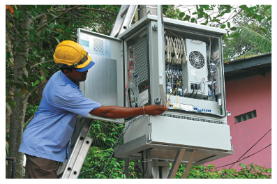
network connectivity with unparalleled reliability and speeds from 1Mbps to 1Gbps.
The future gains ground
Given the Group synergies, it is imperative that we also emphasize the sharing of resources, whether in infrastructure, knowledge or skill. Common platforms in IMS and IT systems will be introduced, while content sharing will be promoted. There will be an eventual goal of converging to a common core. Investments will be effected as a consortium where the Group will be working as one entity with a common goal, leveraging as much as possible on the synergies that exist. It would seem short sighted if the advantages of such a Group with such immense potential is not optimised, to ensure not only the sustainability of the business but also the integral role it can play in national development.
In positioning ourselves to offer world class ICT and Infotainment services to the nation, anywhere anytime by presenting best in class delivery of products and services, we intend on improving every aspect of our product and service portfolio and synergising the portfolio, while deploying innovative content, entertainment and other portal services. We will add features like cloud, e-services, managed and third party services into this equation. We will implement a Service Marketing Framework and deploy a win-win wholesale model which will ensure that both our industry and individual customers will have the advantage of customised solutions.
Operational efficiencies will be maximised through the modernisation of operational architecture, INOC and strengthening brand and marketing capabilities. The Transformation Programme will continue towards customer centricity and empowering a future ready employee base, where team members will be geared through focused Training & Development to be aligned towards the Group's ultimate vision.
It is ICT that drives the world and Sri Lanka Telecom intends to position Sri Lanka as a continuing driver and an enabler in international commerce, instituting better technological innovations coupled with speed, efficiency and a diverse portfolio of products and services. This will truly create the foundation for the 'One Country. One Voice' ethos, committed to a common vision that will drive us ahead when the future calls.
Sri Lanka Telecom Mobitel
Sri Lanka has mapped for itself an ambitious development programme, designed to position itself as South Asia's Economic Hub in five years. The plan works on developing five sub-hubs -
maritime, energy, knowledge, commercial and aviation. The dimension that forms a continuous thread linking each of these industries is ICT, which requires a concerted effort to improve the ICT literacy rate in the country, from the current 30% to around 75%. The government has placed ICT at the top of the agenda, and is promoting state of the art ICT infrastructure, broadband connectivity and apt skills.
The industry shifts into gear
From an industry perspective, telephone density is fast approaching saturation. Voice growth, echoing global trends is showing signs of slowing although, internet penetration is gradually rising. The relatively new phenomenon of Smartphones has initiated a considerable incline in broadband access and Smartphones have also opened up a space for other mobile services like mCommerce to become proactive. Social media too is gaining immense ground, as evidenced in over 1 million active Facebook subscribers in Sri Lanka. One of the biggest advantages Sri Lanka currently possesses, especially in meeting her vision of an economic hub, is the low mobile tariff milieu currently prevalent in Sri Lanka, which is naturally propelling growth and will augur well for the nation's future plans.
As the National Mobile Service Provider, Sri Lanka Telecom Mobitel has always been in the forefront of driving ICT initiatives and this is a stance we intend to maintain as the nation pursues her development agenda. We are truly in a position where, as the Future Calls, we are already prepared and ready to take on the future. The Government's ICT initiatives therefore are already gaining momentum from the groundwork we have established in the past and as seen, will continue to significantly increase the demand for services offered by us.
The telecommunication industry is a rapidly evolving industry, one that is continually undergoing transformations and evolving. One of the significant challenges is the conventional subscriber to subscriber environment transcending to machine to machine with embedded SIMs. Another significant development is that mobile Internet devices are becoming the epicenter of the industry, which once again, is reflective of global trends. Near Field Communication (NFC) technology is making a strong case as a crucial enabler for an entire gamut of services, while technology changes vis a vis 2.5G, 3.5G and 4G are rapidly transforming the way technology has become an empowering tool in all areas of communication.
However, despite being an industry that remains somewhat on par with global and regional trends, being a capital intensive industry and facing numerous challenges in this milieu of survival, the industry is confronted with intense competition. This has pushed some operators to pursue aggressive growth at the expense of profits, a manoeuvre that may be of temporary benefit in the immediate term, but is not good practice for the sustainability of the industry.
Thus mobile industry has become increasingly competitive - consumers are tech-savvy and discerning; their demands are technologically advanced and hence, the rapid evolution we see must be met by us with the apt solutions to meet these expectations and aspirations. We are currently in the process of a
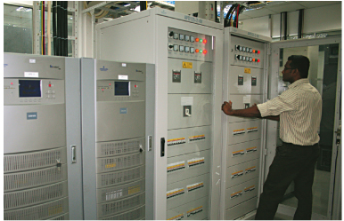
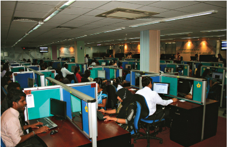
rapid but strategic expansion plan, where new markets are being pursued and underserved markets in the North and East are also being penetrated.
Key Highlights for 2011
Sri Lanka Telecom Mobitel gained added momentum during the year with the appointment of Lalith de Silva as Chief Executive Officer. He infuses decades of experience and knowledge into Mobitel, which will benefit from his global knowledge and exposure as a global ICT and Program Management Specialist working in bluechip companies. No stranger to the company, Lalith de Silva previously functioned as the Director/CEO of Mobitel from 2002-2004 and laid the strong foundation towards current growth of the company.
Being the key partner of the Sri Lanka Cricket Team, we considered it our responsibility to ensure that as co-hosts of the World Cup 2011, our key stadiums were developed to reflect world class standards. While sprucing up the key venues, they were enhanced significantly to add to the state of the art cricket facilities in the country. From a national perspective, we have been a proactive partner in the Government's regional upliftment programme, Deyata Kirula, infusing considerable investment into Moneragala, where the programme was held this year.
Futuristic Initiatives
From very early on, Mobitel has pioneered firsts in mobile technology to Sri Lanka and in some cases in the region. This we believe is imperative if we are to cement our status as the national mobile services provider and be an integral partner in ensuring that the country meets its growth agenda. This year too, that paradigm of firsts was reinforced when Mobitel became the first in South Asia to successfully demonstrate 4G LTE technology achieving data speeds of 96 Mbps. In addition significant network expansion is underway adding network capacity and coverage to enhance customer experience.
Smartphones too were added to this list of firsts, when we introduced the first LG3D Smartphones into Sri Lanka, complementing it with SMART Data Plans, to make Smartphones even smarter. Mobile Augmented Reality was demonstrated for the first time in Sri Lanka at Infotel 2011, while Nawaloka Hospitals transmitted the latest 3Tesla MRI imagery over Mobitel's mHealth platform, breaking more ground as a first in the country.
Some other accomplishments for the year came when Mobitel proudly hosted the GSMA mWomen Working Group Meeting in Colombo, signed a partnership with Smart Track to provide fleet management and asset tracking solutions and launched ETA, Electronic Travel Authorisation. More technological innovations were unveiled with a global first via the world's first tea vending machine Ex Tea, T-Navi which is the latest traffic navigation solution, mHome and virtual shopping at Techno 2011 and mobile surveillance solutions with TeleEye Lanka.
The latest initiative in the public-private partnerships Mobitel has with the government of Sri Lanka was Electronic Travel Authorisation (ETA), a mechanism through which tourists visiting Sri Lanka can obtain their visas. Mobitel designed the entire website required for the online visa service (www.eta.gov.lk) complete with a payment gateway. Furthermore, in addition to managing the front-end, Mobitel also manages the call centre for ETA.
mLearning Partnerships
In our industry of constant change, where technology drives transformation, it is imperative that companies like Mobitel remain ahead of the paradigms of thought and technological innovation. Our mLearning platform is an exclusive, purpose-built, globally accessible content delivery and learning platform which was conceived, designed, developed and deployed by Mobitel. During the year, we sealed mLearning strategic partnerships with the Open University of Sri Lanka (the first such affiliation for the OUSL), and introduced an m-MBA with Edinburgh Napier University, the first such out of country endeavour. We also introduced an mLearning IVR Programme for farmers in partnership with the University of Ruhuna, introducing best practices in agriculture. This knowledge dissemination was further augmented when Mobitel partnered with CIMA via m-Learning.
We also maintain strong partnerships in government initiatives, aimed at creating an enabling ICT environment. A strategic endeavour this year was the initiative entered into with the Ministry of Higher Education and National Online Distance Education Service (NODES). Another achievement was that our mLearning service under the National Higher Education Learning Platform was used by the President of Sri Lanka when he addressed 10,000 students convened across 28 locations across the country. Speaking to them from Temple Trees, the President inaugurated the 'Leadership and Positive Thinking' training and development programme for university entrants.
In partnership with the National Apprentice and Industrial Training Authority, we initiated an educational imperative that would ensure a smooth flow of knowledge to both urban and rural areas. While continuing the initiative we launched in 2010 with the Institute of Agro Technology and Rural Science in Hambantota, we developed and integrated training courses and knowledge dissemination programmes especially in the area of entrepreneurship development into the existing curriculum.
Other Achievements
Our contribution to the telecommunication industry as both a corporate steward and technological innovator was amply rewarded this year too, as we continued to add more accolades to our growing portfolio. We emerged with a total of four awards at the SLIM Brand Excellence awards, winning the coveted Brand of the Year award in addition to two gold awards and one bronze award. The Engineering Excellence Awards conferred us with the title of Best Engineering Organisation, while we won the highest award for Excellence in the Service Sector at the CNCI Achiever Awards. An unprecedented five awards were also collated by us at the National Business Excellence Awards.
The Future in perspective
These are different times, where mindsets are changing, attitudes are transforming and wants are evolving. We intend to optimise fully on our technology, processes and people, ensuring that the strategies employed will be reflected on our bottom line, not only in the short and medium term, but in the long term as well. We intend optimizing our resources and managing our costs, while benefitting from the synergies with our parent Sri Lanka Telecom and the companies within our Group.
There will be a concerted effort to be an aggressive broadband player, and we also see immense business opportunity in corporate and SMEs, both focused as engines of growth in the current economic development agenda. The North and East will continue to be a vital conduit in our expansion plans, which will also include establishing a call center in Northern Province in addition to the proposed call centre in Southern Province.
In all this, our underpinning ethos is that of customer centricity, where technological innovation requires the imperative partnership of customer service excellence. This will always remain at the core of our business vision for the future.
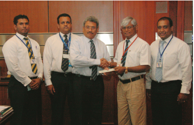
Sri Lanka Telecom Awards
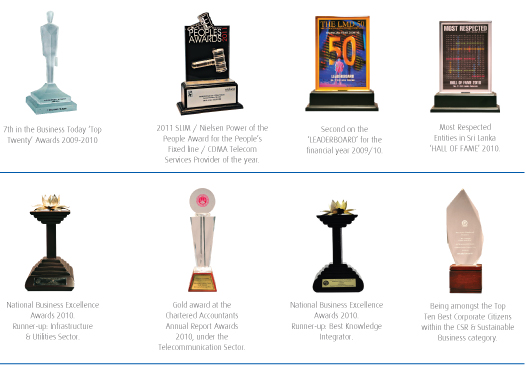
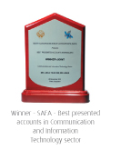
"Innovation and technology are primary supports on our future journey. This has spurred Sri Lanka Telecom to become a true leader in telecommunication solutions for the nation; best practices, global trends, apt systems and processes and being astute in investing in the right people for the right job are continuous priorities."
Mobitel Awards
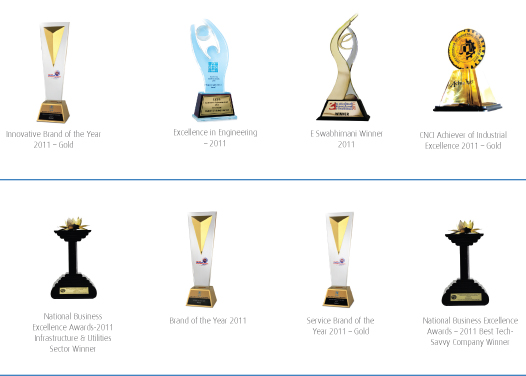
"Mobitel became the first in South Asia to successfully demonstrate 4G LTE technology achieving data speeds of 96 Mbps. In addition significant network expansion is underway adding network capacity and coverage to enhance customer experience."